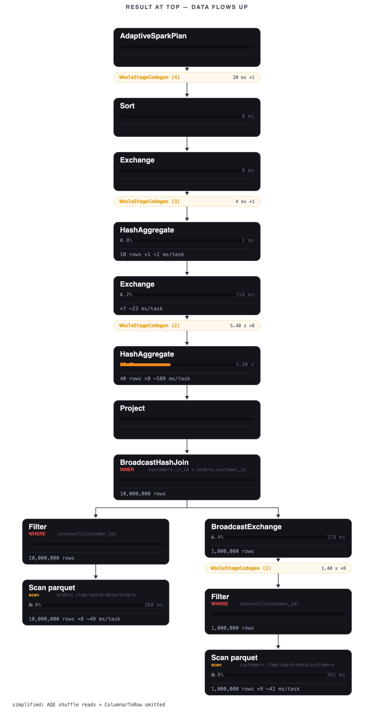

Spark Connect · AWS ECS · SQL
Spark Connect on ECS. Zero cluster management.
A Snowflake-like SQL workspace on your own AWS infrastructure, in front of stock Apache Spark.

The client is decoupled from the cluster.
Spark Connect splits the client from the server. Your notebook, DataFrame code or SQL client holds a thin gRPC connection; the engine lives in its own ECS task, launched on demand.
Two lines to a remote Spark session.
Create a warehouse, copy the endpoint, point a stock Spark Connect client at it. No cluster to size, no Spark install to reconcile.
# launch a warehouse with the REST gateway, then attach a stock client
from pyspark.sql import SparkSession
spark = (SparkSession.builder
.remote("sc://flashpoint-driver.internal:15002")
.getOrCreate())
spark.sql("SELECT region, sum(amount) FROM orders GROUP BY region").show()The REST gateway owns lifecycle and SQL; the gRPC endpoint is the engine. Both speak to the same warehouse.
Three things you stop doing.
Managed ECS orchestration
The gateway runs the driver and spot executors, waits for gRPC, returns the endpoint, and suspends on an idle TTL. You never open the ECS console.
Snowflake-like SQL workspace
Worksheet, query profiles, history and a cost center in the box, on your own AWS bill, metered per compute-second.
No Spark version lock-in
Stock Spark Connect over gRPC. The driver image pins its Spark, the protocol stays standard, and any compatible client can attach.
Ships today
- Warehouse lifecycle: create, suspend, resume and resize on demand.
- SQL worksheet with results in the grid, and history you can reload.
- Query profiles as an operator tree, straight from the Spark UI.
- Per-second metering and a cost center beside AWS Cost Explorer.
- Spark Connect endpoints for notebooks and DataFrame code.

Questions, answered flatly.
What is Spark Connect on ECS?
Spark Connect is Apache Spark's client-server protocol. Flashpoint runs the server side as an ECS Fargate task: one on-demand driver plus spot executors, addressed over gRPC, created and suspended on demand.
Do I manage the cluster?
No. The gateway launches the driver and executors, waits for gRPC to answer, returns the endpoint, and suspends the warehouse on an idle TTL. Suspended warehouses bill nothing.
Am I locked to a Spark version?
No. The driver image pins its own Spark version and the gateway's client pin tracks it, and the protocol is stock Spark Connect, so any compatible client can attach.
What does it cost?
Per compute-second while a warehouse runs, on your own AWS bill. Suspended warehouses bill nothing, and the Cost Center shows live meters beside Cost Explorer.
Waitlist
Deploy your first Spark Connect cluster.
Early access opens in batches. Leave an address and you get one email when a batch opens, nothing else. Or run the whole stack locally tonight.
One email when signup opens. Stored with the mailing-list provider, never sold or shared.